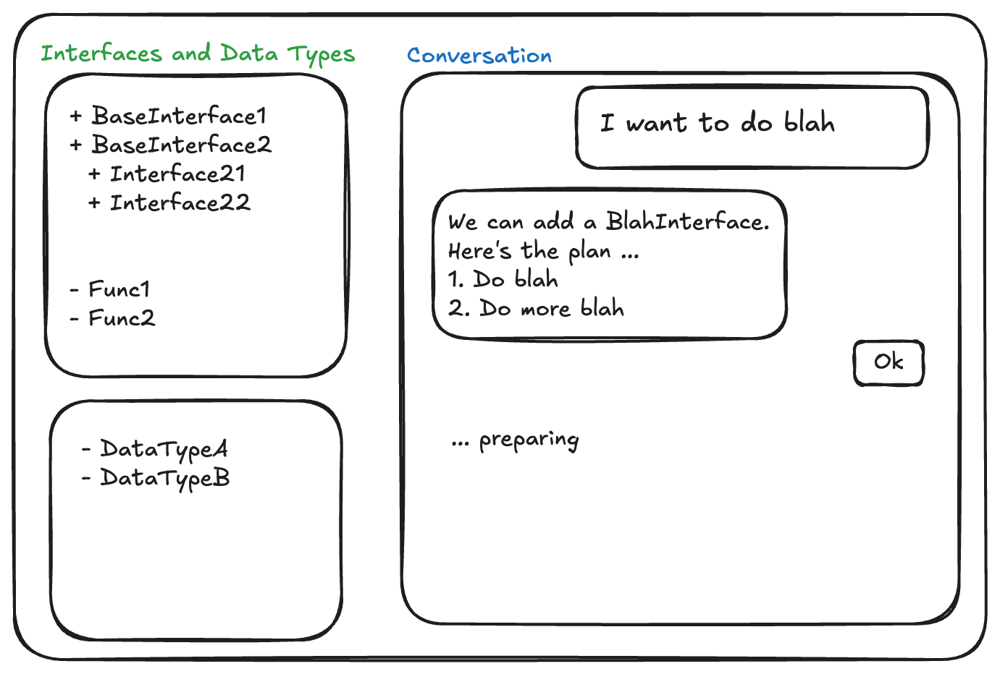
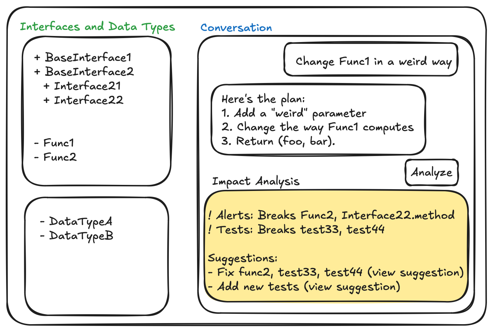

Dare to Reinvent Software Development for the AI age
Prelude
These days we hear of many "transformative" tools for software engineering based on LLMs. Although I have tried many (and I am fond of few for sure), here is what I think - we are not daring sufficiently to reinvent! Rather, we are trying to shoehorn the wonderful possibilities into the limitations of the ecosystem of today. I might be a little provocative here but hope some of you will hear me out.
The history of programming languages and tools is like a story of rising abstractions. From assembly language to high-level programming languages, from procedural to object-oriented programming, each paradigm shift has introduced new layers of abstraction (while preserving access to lower levels when needed). Each advent also brought along its transformative technology and tools. Virtual Machines, Interpreters, IDEs, just to name a few. Viewing from the lens of earlier technologies, new tools/technologies were transformational. Few would have thought of interpreters while writing assembly code.
Today, supposedly we stand at the door of a revolution, driven by Large Language Models (LLMs). However, the current LLM-powered development tools are more like augmenting our traditional way of working. Code completion, pair programming assistants, AI coding helpers - they all operate within our existing paradigms of files, folders, and repositories. Sure, these tools are powerful, but haven't yet fundamentally changed how we think about software engineering. To me, it feels like early versions of flights operating within the confines of imagination of how birds fly. Are we thinking too small?
What if we could break free from constraints we've taken for granted?
Premise
Software is about interfaces, data types, and flows. The codebase establishes various kinds of flows facilitated by interfaces, processing the data defined by data schemas or types. The ideal programming experience is about "what you want to build and how you want to architect it". Hope LLMs and AI age takes us closer to this experience, minimizing the rest.
(Apologies if someone thinks the above is a gross simplification or plain wrong. I am nowhere an authority on this.)
Questioning the Status Quo
A typical software engineer has VSCode (or other IDEs) open with synced to a repository containing a bunch of folders and files. They open and edit a bunch of files simultaneously, import interfaces from other modules, write some code, run something in terminal, compile/build it, test it, fix it, etc. Notice that a lot of this is far from our golden goal of "what you want to build and how you want to architect it".
What if there are no files, folders, imports to deal with [1] - and all you see is your collection if interfaces, data types, and a friendly AI assistant to do your bidding? Let AI agents handle the mechanics of file management and code organization behind the scenes. Imagine describing what you want to build, and having an AI agent handle not just the code generation, but also its optimal placement within the codebase, managing imports, and maintaining consistency.

LLMs can generate a ton of code, that's their speciality. What's more important is verifying its correctness, understanding its impact. Now consider an impact analysis tool that, whenever an LLM suggests a code change, automatically visualizes the affected code paths and how they've changed. Instead of manually tracing through function calls and data flow, you could immediately see a clear picture of how your change affects the system. Once a change is approved by the engineer it could be auto-committed by AI agents with appropriate commit messages.
Data flow visualization could become more intuitive too. Rather than piecing together how data moves through your system by reading through multiple files, you could ask questions like "Show me how we process user payment information" and get a comprehensive view of the paths. Debugging could get better too. Instead of setting breakpoints and stepping through code, you might have conversations about behavior. "Why did this particular request fail?" might trigger the system to approximately trace the execution path and present you with both the problem and potential solutions (many of us might be using LLMs already for this purpose).Documentation could become dynamic, generated on-demand based on your current needs (imagine tutorials generated on-demand focusing on some particular aspect).
These and other such tools wouldn't require a complete departure from current development practices. Your code would still live in files and repositories, but the LLM agent would handle this organization invisibly. You could still peek behind when needed, but most of your interaction would be at a higher level of abstraction.
Beyond
The things mentioned above are still in the realm of near-term possibilities. How software engineering would change in the medium-to-long term is impossible to predict (duh!).
Would we deal with software by expressing intentions, concepts, and intended behaviors? Would we see code expressed entirely different than today, and trust that the actual code on the background should be correct? This is not as radical as it sounds either - we see code in Python/Javascript today, and assume everything behind works correctly down to the machine level. The boundary between design and implementation might blur as we work at a more conceptual level. Perhaps people well-versed in theory can think better how it could look like.
Conclusion
This is not an article predicting the future. This is merely from the feeling that currently we are imagining the potential of AI confined by our current ways of doing things. A lot of wild things will happen (and if nothing wild happens that itself would be very wild). This is an article meant to be provocative, and if you are not surprised at all then it is because I am not exactly a software guru but an engineer-researcher who enjoys thinking about software. One thing is sure, it is going to be a hell of a ride!
Happy new year 2025!
Footnotes:
[1]
It is not too radical an idea though (see this for Java due to probably how Java works, but probably not many other languages.)